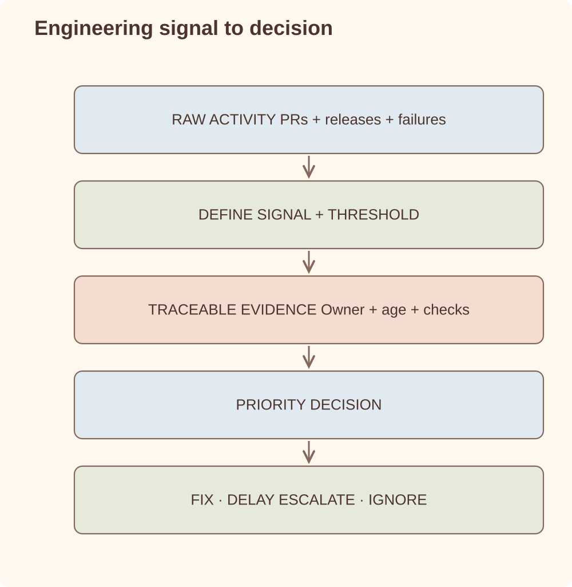

Case study
Engineering Management Dashboard
A dashboard I built to collect the engineering information I was otherwise assembling by hand each week.
GitHub Actions / scheduled agents / Sentry MCP / Unity Cloud costs / priority reviews / AI-assisted notes
Problem
With frequent releases, information was spread across GitHub, Sentry, Unity Cloud and several reports. I built one view for the questions I kept asking in priority and release reviews. Scheduled agents collect the data and prepare summaries, with links back to the underlying issues and pull requests.
Goals
- Turn repository activity into a daily management view.
- Surface release, CI, Sentry and team-load signals.
- Track Unity Cloud cost data alongside engineering activity.
- Use AI-assisted summaries to reduce manual status gathering.
- Support priority reviews without inventing a heavy process.
Architecture
Raw activity becomes a decision only after its meaning is defined.

What it computes
Each run collects four groups of information:
- Flow — lead time to production (median and p75, with sample sizes), PR aging bucketed by reason it waits: on the author, on developer review, on QA, or ready to merge.
- Quality — escaped defects per release (pre-release vs 14-day escape window), regression rate per release, rework rate with confidence tags, hotfix pressure.
- Team — review distribution and concentration, QA queue size, bus factor per critical system over a 90-day window, with former-employee attribution flagged as a knowledge gap.
- Operations — CI health, release deltas, Sentry signals, Unity Cloud build costs.
Every metric has a pinned definition — formula, window, exclusions — recorded next to the code. When a definition has to change, the change itself is called out in the next report, so a delta is never silently a redefinition. Ratios come with drill-downs listing the exact issues and PRs counted, so any number can be re-derived by a human.
Interesting problems
- How do you keep metrics from becoming vanity dashboards? Put them where priority reviews and engineering-management decisions happen, and delete the ones that never change a decision.
- How do you make week-over-week deltas trustworthy? Pin the definitions and cache the fetches. Ad-hoc redefinitions across runs make trends meaningless — the fix is boring discipline, not smarter models.
- How do you make AI useful for management work? Use it to summarize evidence and flag changes, while humans keep ownership of decisions. Each reported metric uses a fixed definition and links to the records counted. AI helps summarize changes and surface questions; the underlying records and definitions remain inspectable.
- How does the system get better? A lessons file: every correction becomes a written rule the next run applies — cumulative totals are not trends, duplicates are excluded and named, partial windows are flagged instead of silently substituted.
Lessons learned
- The dashboard became useful when it was part of an existing review, not another destination people had to remember.
- AI summaries need links to the issues, releases and pull requests they describe.
- We removed metrics that nobody used.